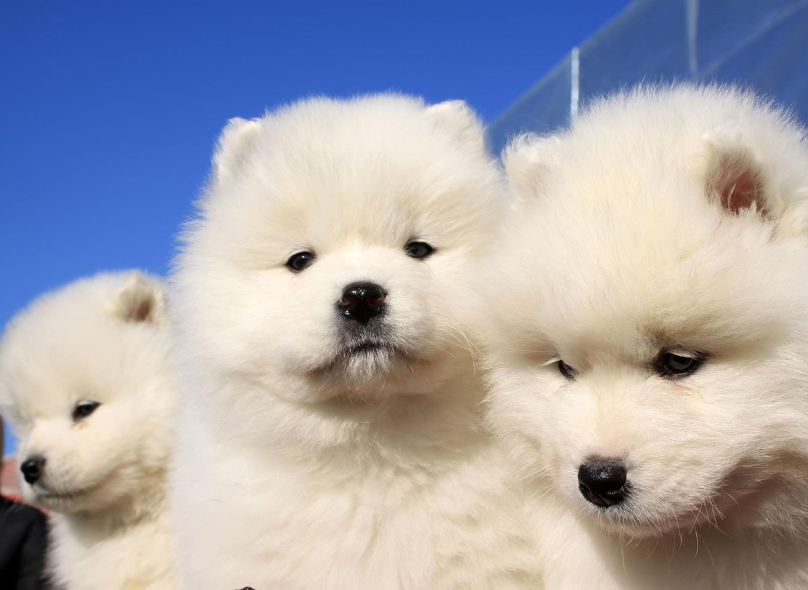
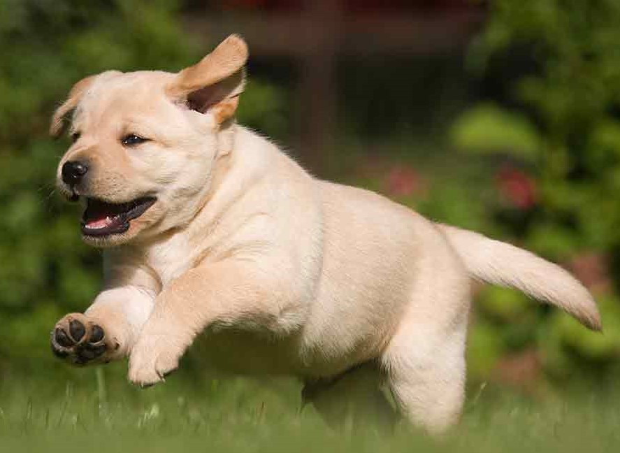
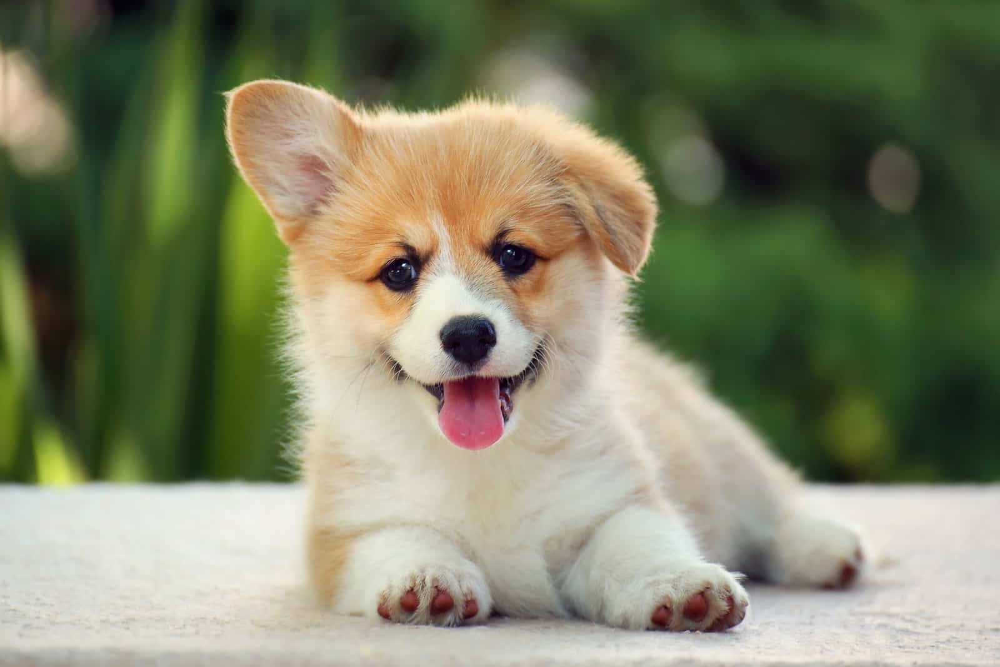
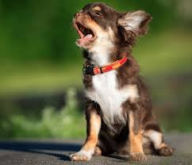

| Photographs | Name | Descriptions |
|---|---|---|
|  | Samoyed | Originally bred to hunt, haul sledges, and herd reindeer, the Samoyed dog breed proved a valuable companion for northwestern Siberia's Samoyede people. The Samoyed is best known for its pure-white fluffy coat, curled fluffy tail, friendly personality, and love of cold weather. |
|  | Labrado Retriever | The Labrador is a moderate dog, not extreme in any way. It is square or slightly longer than tall, of fairly large bone and substance. They are almost square in appearance, with a strong body and sturdy legs.Labrador Retrievers are great family dogs. They are energetic, friendly, and love to go on adventures with their families. |
| |
Doberman Pinscher | The Doberman is well known as a brave guardian and noble companion. They are leek and powerful, possessing both a magnificent physique and keen intelligence, the Doberman Pinscher is one of dogkind's noblemen. Dobermans make a loyal and protective companion, an excellent guardian and watchdog. Playful and generally gentle with children. Tends to be reserved with strangers. |
| |
Shiba Inu | The Shiba Inu is an ancient breed with their origins in Japan. For centuries Japanese Shiba Inus were used as hunting dogs. the Shiba Inu is among the world's oldest breeds and one of six native to Japan. As with any dog breed, you should always supervise your Shiba Inu when around children to make sure everyone stays safe and happy. |
| |
Beagle | The beagle is one of the most recognizable medium-sized dog breeds, known for its large, expressive eyes; long, floppy ears; and an upright, white-tipped tail. It has a short tricolored coat typically dominated by white and varied shades of brown. Beagles are scent hounds, hunting and tracking their prey by ground-scenting, and their keen sense of smell ranks with bloodhounds and basset hounds. |
|  | Pembroke Welsh Corgi | Known for their quick intelligence and forceful will, Pembroke Welsh corgis are active, hardy and want to be part of the family. The Corgi dog breed is certainly the right pet for you if you’re the type of person who needs a low-maintenance, easy-going, friendly puppy with a sweet temperament and lovable personality. |
| |
German Shepherd | German Shepherds are famous for their intelligent, loyal, and hardworking natures. They are often used as guide, therapy, search-and-rescue, police, military, and narcotics and explosives detecting dogs. While they can come across as aloof to strangers, they are known to be wonderful family dogs. |
| |
Cavalier King Charles Spaniel | The Cavalier King Charles Spaniel is a British breed of toy dog of spaniel type. Ideal for family or "empty nesters," the Cavalier King Charles spaniel is affectionate, and intelligent with endearing devotion. The spaniel is superb with children and a pleasurable companion. |
|  | Long Haired Chihuahua | Chihuahua with a long coat, as opposed to a short coat, is described as a long haired Chihuahua. These furry dogs are different from their short and smooth coat counterparts because they have inherited a recessive gene variant (allele) for a long coat from their parents. Because of their long coat, long haired Chihuahuas may require a little more grooming attention. |
| |
Bichon Frise | The Bichon Frise is a very happy dog that will charm anyone and everyone with their personality, even the neighbors. It is very playful and affectionate, and loooves to cuddle. Its favorite thing to do is spend all day long with its people, and it always has but one goal: to make its master smile. So the Bichon Frise really doesn’t like to be left alone a lot. It will start to bark and chew/destroy things. It is so friendly and polite that it gets on with other pets and dogs wonderfully. No wonder that the Bichon Frise is one of the most popular dog breeds. |
References:
Google. (2022) [Samoyed Top Facts: These are 10 fun dog facts you need to know about the adorable Samoyed breed üêï]
Retrieved on November 17, 2022 from: https://www.scotsman.com/lifestyle/family-and-parenting/samoyed-top-facts-these-are-10-fun-dog-facts-you-need-to-know-about-the-adorable-samoyed-breed-3569493
Google. (2020) [How to pick a Labrador puppy]
Retrived on November 17, 2022, from: https://www.countrylife.co.uk/out-and-about/dogs/how-to-pick-a-labrador-puppy-33931
Google. (n.d.) [Doberman Pinscher] Retrieved on November 17, 2022, from: https://www.vieravet.com/services/dogs/breeds/doberman-pinscher
Google. (n.d.) [Essential tools for Shiba Inu owners]
Retreived on November 17, 2022, from: https://thejapantry.com/essential-tools-for-shiba-inu-owners/
Google. (2022) [Beagle: Dog Breed Characteristics & Care] Retrieved on November 17, 2022, from: https://www.thesprucepets.com/dog-breed-profile-beagle-1117938
Google. (2022) [The 5 Best Corgi Breeders In Georgia] Retrieved on November 17, 2022, from: https://www.pupvine.com/corgi-breeders-in-georgia/
Google. (2019) [ANIMALSHow To Identify The Purity Of The German Shepherd Puppy | 5 Ways] Retrieved on November 17, 2022, from: https://www.meersworld.net/2019/01/how-to-identify-purity-of-german.html
Google. (2022) [How Much Does a Cavalier King Charles Spaniel Cost? (2022 Price Guide)]
Retrieved on November 17, 2022, from: https://www.bubblypet.com/cavalier-king-charles-spaniel-cost/
Google. (2022) [What Is A Long Haired Chihuahua Mix?] Retrieved on November 17, 2022, from: https: https://www.thegoodypet.com/what-is-a-long-haired-chihuahua-mix
Google. (n.d.) [Bichon Frisé] Retrieved on November 17, 2022, from: https://www.animalfunfacts.net/pets/dogs/574-bichon-frise.html